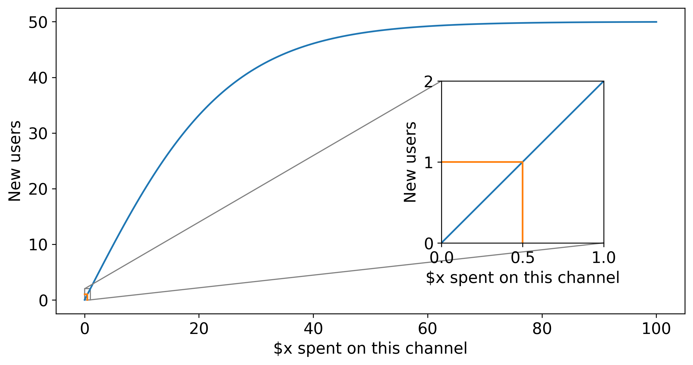

Using Bayesian MMM's to reduce customer acquisition costs
The data scientists at HelloFresh have a big job on their hands. As part of a rapidly growing company with a worldwide reach, they influence the allocation of marketing dollars every year. One of their tasks is to maximize new customer acquisitions from data-driven insights.
As part of their approach, the data scientists built a Bayesian Media Mix Model (see this video for more details). If you want a refresher of the power of Bayesian Media Mix Models, check out our previous blog post. But in short, MMM’s help us understand the characteristics and effectiveness of different marketing channels like TV, radio, podcasts, social media, daily deals, and more, based on how much we spent on each channel over time and how many new users we acquired.
Given the scale of HelloFresh’s operations, even minor improvements in the insights gained by such models can have significant effects on new customer acquisitions. Recently HelloFresh’s data scientists challenged us to do precisely this - could we (PyMC Labs) help them improve their already sophisticated Bayesian MMM?
Thanks to PyMC3, we can build a model, feed in data, and press the Inference Button™. However, making high profile decisions requires due diligence! One crucial way of doing this is inspecting posterior predictive checks, which are plots comparing the model’s predicted customer acquisitions to the actual data. The closer the match between predictions and actuals, the greater confidence we can have in the model. By inspecting PPC plots, we could identify two key improvements to the model:
With these two changes, we improved both the accuracy and precision of the model’s predictions. In the figure below the top panel shows the posterior of the original model and the bottom panel shows the posterior of the improved model. The comparison with actuals demonstrates reduced error and a 60% reduction in the variance of the predictions. The net result was that HelloFresh’s data science team could gain greater confidence that parameter estimates (such as channel efficiency or saturation) capture something meaningful about the world, providing greater confidence in making data-driven changes to marketing budgets.
In addition, we implemented the following enhancements:
As the developers of PyMC3, we could leverage our considerable familiarity and expertise to deliver a 10x speedup to model inference time. By reducing a 20 min process down to just 2 mins, rapid iteration and experimentation become possible.
This was achieved through multiple methods, but particular attention was paid to the adstock function. Initially, this was implemented using an expensive convolution operation that scaled quadratically with the number of data points. We derived a linear-time algorithm for this specific case and implemented a custom theano operator with numba JIT compilation to achieve significant speedups.
Speeding up the model this much-allowed sensitivity analyses to be undertaken. We run hundreds of simulations under different priors to understand how it affected posterior estimates of the parameters. If parameter estimates are sensitive to priors’ variation, we know they are influenced less by the data and more by beliefs, which is not appropriate if priors are not supported by solid domain knowledge.
We also reparameterized the reach function as:
$$\beta \cdot \text{tanh} \Big(x /(\beta \cdot c_0) \Big)$$
Where $\beta$ is the number of users at saturation, and $c_0$ is the initial cost per user (inverse of the slope at zero dollars). This helps in interpreting model parameters because they are clearly related to money spent. It also makes it easier to use human knowledge and experience to define priors over these parameters. The plot below shows an example of the new parametrization using some fake data.

We work closely with clients to make sure we help solve their problems. But the code is just one part of that. We provided:
ZeroSumNormal distribution which was not publically available at the time.We and the HelloFresh data science team (check out their recruitment page) were delighted with the results of this project. But because Media Mix Modeling can be used in various ways, there are multiple routes for further progress. In fact, we are currently still working with the HelloFresh team on the topic. For example, Bayesian MMM’s can be used to optimally and automatically set budgets across media channels, rather than just informing those budgets. And those budgets can be used not only to maximize customer acquisitions but also to drive further learning and marketing experimentation where we have remaining uncertainty.
If you are interested in seeing what we at PyMC Labs can do for you, then please email info@pymc-labs.io. We work with companies at a variety of scales and with varying levels of existing modeling capacity. We also run corporate workshop training events and can provide sessions ranging from introduction to Bayes to more advanced topics.